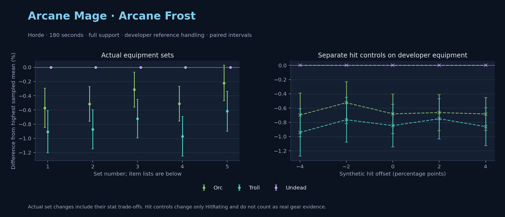

Horde · Orc / Troll / Undead

No pet or guardian appears in the reference combat metrics. Reference: Orc, developer equipment, 180 seconds and full support. Pet choices remain those of the developer build.
WoWSims developer · P1 Arcane
Unimplemented enchant or active set effects: [{"id": 181, "pieces": 2, "effects": ["+8 All Resistances."]}, {"id": 181, "pieces": 4, "effects": ["When struck in combat has a 2% chance of freezing the attacker in place for 3s. Can only occur once every 60 sec."]}]
180 seconds, full support and original developer references. Hit below is generic sheet melee / spell hit; school and talent bonuses can be attached directly to spells.
| Race | DPS | Gap and interval | Generic hit | Replay |
|---|---|---|---|---|
| Undead | 696.41 | +0.000% ± 0.000 | 2.9% / 2.9% | Native input · Website JSON |
| Orc | 692.43 | -0.571% ± 0.277 | 2.9% / 2.9% | Native input · Website JSON |
| Troll | 690.10 | -0.906% ± 0.297 | 2.9% / 2.9% | Native input · Website JSON |
| Slot | Item | ID | Enchant |
|---|---|---|---|
| Head | Magister's Crown | 16686 | |
| Neck | Gem of Trapped Innocents | 23057 | |
| Shoulder | Sorcerer's Mantle | 226936 | |
| Back | Drape of Vaulted Secrets | 21415 | |
| Chest | Magister's Robes | 16688 | |
| Wrist | Magister's Bindings | 16683 | |
| Hands | Magister's Gloves | 16684 | |
| Waist | Magister's Belt | 16685 | |
| Legs | Magister's Leggings | 16687 | |
| Feet | Magister's Boots | 16682 | |
| Ring 1 | Brilliant Watcher's Signet | 275982 | |
| Ring 2 | Ring of Entropy | 18543 | |
| Trinket 1 | Talisman of Ephemeral Power | 18820 | |
| Trinket 2 | Neltharion's Tear | 19379 | |
| Main hand | Grand Marshal's Mageblade | 23451 | |
| Off hand | Master Dragonslayer's Orb | 19366 | |
| Ranged / relic | Torch of Light | 279246 |
Community calculated list · Published pre-raid
Unimplemented enchant or active set effects: [{"id": 181, "pieces": 2, "effects": ["+8 All Resistances."]}]
180 seconds, full support and original developer references. Hit below is generic sheet melee / spell hit; school and talent bonuses can be attached directly to spells.
| Race | DPS | Gap and interval | Generic hit | Replay |
|---|---|---|---|---|
| Undead | 726.17 | +0.000% ± 0.000 | 6.6% / 6.6% | Native input · Website JSON |
| Orc | 722.42 | -0.517% ± 0.245 | 6.6% / 6.6% | Native input · Website JSON |
| Troll | 719.84 | -0.872% ± 0.275 | 6.6% / 6.6% | Native input · Website JSON |
| Slot | Item | ID | Enchant |
|---|---|---|---|
| Head | Sorcerer's Crown | 226935 | Arcanum of Focus |
| Neck | Archlight Talisman | 15856 | Enchant Necklace - Spell Power |
| Shoulder | Magister's Mantle | 16689 | |
| Back | Arcanoweave Cloak | 272411 | |
| Chest | Sorcerer's Robes | 226932 | Enchant Chest - Major Intellect |
| Wrist | Magister's Bindings | 16683 | Enchant Bracer - Greater Spellpower |
| Hands | Sorcerer's Gauntlets | 226930 | Enchant Gloves - Arcane Power |
| Waist | Belt of the Archmage | 18405 | |
| Legs | Magister's Leggings | 16687 | Arcanum of Focus |
| Feet | Sorcerer's Sandals | 226931 | Mystic Rugged Armor Kit |
| Ring 1 | Channeler's Ring | 272406 | |
| Ring 2 | Blessed Band of Light | 272407 | |
| Trinket 1 | Weakness Analyzer | 272438 | |
| Trinket 2 | Rune of the Guard Captain | 19120 | |
| Main hand | Sageblade | 22383 | |
| Off hand | Spirit of Aquementas | 11904 | Enchant Off-Hand - Superior Intellect |
| Ranged / relic | Nether Force Wand | 11263 |
Published one-slot hit alternative · Published pre-raid
One source-listed alternative; at least 80% of the source slot score retained. Reported hit selects the contrast; only native stats determine simulation outcomes. This is an experimental combination, not an endorsed best set.
Unimplemented enchant or active set effects: [{"id": 181, "pieces": 2, "effects": ["+8 All Resistances."]}]
180 seconds, full support and original developer references. Hit below is generic sheet melee / spell hit; school and talent bonuses can be attached directly to spells.
| Race | DPS | Gap and interval | Generic hit | Replay |
|---|---|---|---|---|
| Undead | 715.52 | +0.000% ± 0.000 | 5.6% / 5.6% | Native input · Website JSON |
| Orc | 713.27 | -0.315% ± 0.245 | 5.6% / 5.6% | Native input · Website JSON |
| Troll | 710.36 | -0.722% ± 0.271 | 5.6% / 5.6% | Native input · Website JSON |
| Slot | Item | ID | Enchant |
|---|---|---|---|
| Head | Sorcerer's Crown | 226935 | Arcanum of Focus |
| Neck | Archlight Talisman | 15856 | Enchant Necklace - Spell Power |
| Shoulder | Magister's Mantle | 16689 | |
| Back | Arcanoweave Cloak | 272411 | |
| Chest | Sorcerer's Robes | 226932 | Enchant Chest - Major Intellect |
| Wrist | Magister's Bindings | 16683 | Enchant Bracer - Greater Spellpower |
| Hands | Gloves of Spell Mastery | 14146 | Enchant Gloves - Arcane Power |
| Waist | Belt of the Archmage | 18405 | |
| Legs | Magister's Leggings | 16687 | Arcanum of Focus |
| Feet | Sorcerer's Sandals | 226931 | Mystic Rugged Armor Kit |
| Ring 1 | Channeler's Ring | 272406 | |
| Ring 2 | Blessed Band of Light | 272407 | |
| Trinket 1 | Weakness Analyzer | 272438 | |
| Trinket 2 | Rune of the Guard Captain | 19120 | |
| Main hand | Sageblade | 22383 | |
| Off hand | Spirit of Aquementas | 11904 | Enchant Off-Hand - Superior Intellect |
| Ranged / relic | Nether Force Wand | 11263 |
Published ranked alternatives · Published pre-raid
Recorded source replacements: [{"slot": "shoulder", "from": 227808, "to": 19050, "publishedAlternativeRank": 1, "publishedEpDelta": -11.7, "reason": "First published alternative compatible with the current WoWSims database, class, faction and occupied slots."}, {"slot": "waist", "from": 228190, "to": 18405, "publishedAlternativeRank": 1, "publishedEpDelta": -13.3, "reason": "First published alternative compatible with the current WoWSims database, class, faction and occupied slots."}]
180 seconds, full support and original developer references. Hit below is generic sheet melee / spell hit; school and talent bonuses can be attached directly to spells.
| Race | DPS | Gap and interval | Generic hit | Replay |
|---|---|---|---|---|
| Undead | 724.36 | +0.000% ± 0.000 | 6.8% / 6.8% | Native input · Website JSON |
| Orc | 720.66 | -0.511% ± 0.244 | 6.8% / 6.8% | Native input · Website JSON |
| Troll | 717.34 | -0.970% ± 0.278 | 6.8% / 6.8% | Native input · Website JSON |
| Slot | Item | ID | Enchant |
|---|---|---|---|
| Head | Sorcerer's Crown | 226935 | Arcanum of Focus |
| Neck | Archlight Talisman | 15856 | Enchant Necklace - Spell Power |
| Shoulder | Mantle of the Timbermaw | 19050 | |
| Back | Arcanoweave Cloak | 272411 | |
| Chest | Robe of the Archmage | 14152 | Enchant Chest - Major Intellect |
| Wrist | Runecloth Cuffs | 254123 | Enchant Bracer - Greater Spellpower |
| Hands | Sorcerer's Gauntlets | 226930 | Enchant Gloves - Arcane Power |
| Waist | Belt of the Archmage | 18405 | |
| Legs | Magister's Leggings | 16687 | Arcanum of Focus |
| Feet | Sorcerer's Sandals | 226931 | Mystic Rugged Armor Kit |
| Ring 1 | Channeler's Ring | 272406 | |
| Ring 2 | Blessed Band of Light | 272407 | |
| Trinket 1 | Weakness Analyzer | 272438 | |
| Trinket 2 | Frozen Heart of the Mountain | 249469 | |
| Main hand | Sageblade | 22383 | |
| Off hand | Spirit of Aquementas | 11904 | Enchant Off-Hand - Superior Intellect |
| Ranged / relic | Brilliant Wand | 249385 |
Published one-slot hit alternative · Published pre-raid
One source-listed alternative; at least 80% of the source slot score retained. Reported hit selects the contrast; only native stats determine simulation outcomes. This is an experimental combination, not an endorsed best set.
Recorded source replacements: [{"slot": "shoulder", "from": 227808, "to": 19050, "publishedAlternativeRank": 1, "publishedEpDelta": -11.7, "reason": "First published alternative compatible with the current WoWSims database, class, faction and occupied slots."}, {"slot": "waist", "from": 228190, "to": 18405, "publishedAlternativeRank": 1, "publishedEpDelta": -13.3, "reason": "First published alternative compatible with the current WoWSims database, class, faction and occupied slots."}]
180 seconds, full support and original developer references. Hit below is generic sheet melee / spell hit; school and talent bonuses can be attached directly to spells.
| Race | DPS | Gap and interval | Generic hit | Replay |
|---|---|---|---|---|
| Undead | 720.23 | +0.000% ± 0.000 | 5.8% / 5.8% | Native input · Website JSON |
| Orc | 718.63 | -0.221% ± 0.249 | 5.8% / 5.8% | Native input · Website JSON |
| Troll | 715.77 | -0.619% ± 0.279 | 5.8% / 5.8% | Native input · Website JSON |
| Slot | Item | ID | Enchant |
|---|---|---|---|
| Head | Sorcerer's Crown | 226935 | Arcanum of Focus |
| Neck | Archlight Talisman | 15856 | Enchant Necklace - Spell Power |
| Shoulder | Mantle of the Timbermaw | 19050 | |
| Back | Arcanoweave Cloak | 272411 | |
| Chest | Robe of the Archmage | 14152 | Enchant Chest - Major Intellect |
| Wrist | Runecloth Cuffs | 254123 | Enchant Bracer - Greater Spellpower |
| Hands | Gloves of Spell Mastery | 14146 | Enchant Gloves - Arcane Power |
| Waist | Belt of the Archmage | 18405 | |
| Legs | Magister's Leggings | 16687 | Arcanum of Focus |
| Feet | Sorcerer's Sandals | 226931 | Mystic Rugged Armor Kit |
| Ring 1 | Channeler's Ring | 272406 | |
| Ring 2 | Blessed Band of Light | 272407 | |
| Trinket 1 | Weakness Analyzer | 272438 | |
| Trinket 2 | Frozen Heart of the Mountain | 249469 | |
| Main hand | Sageblade | 22383 | |
| Off hand | Spirit of Aquementas | 11904 | Enchant Off-Hand - Superior Intellect |
| Ranged / relic | Brilliant Wand | 249385 |
The same declared pool is available to every race. Each race keeps its best validation-sample set with its screening-selected racial policy. Separate samples confirm that choice, with fresh precision samples near the practical-loss boundary. Gaps use the highest sampled mean under that same duration, support and reference treatment as their reference. A zero reference gap does not certify a race; the main matrix also allows uncertainty in the leader.
| Pool | Seconds | Support | References | Race | DPS | Gap and interval | Racial policies / mana | Selected set | Generic hit: melee / spell | Replay |
|---|---|---|---|---|---|---|---|---|---|---|
| published-pre-raid | 60 | full | developer | Orc | 833.67 | +0.000% ± 0.00020,000 iterations | developer / developer / developerMana waits 0.0s | published-mage-arcane-horde-c89e1213b91fdb8d | 6.8% / 6.8% | Input · Result · Stats |
| published-pre-raid | 60 | full | developer | Troll | 833.08 | -0.070% ± 0.06920,000 iterations | oncd / developer / developerMana waits 0.0s | published-mage-arcane-horde-c89e1213b91fdb8d | 6.8% / 6.8% | Input · Result · Stats |
| published-pre-raid | 60 | full | developer | Undead | 829.61 | -0.486% ± 0.06120,000 iterations | developer / developer / developerMana waits 0.0s | published-mage-arcane-horde-c89e1213b91fdb8d | 6.8% / 6.8% | Input · Result · Stats |
| published-pre-raid | 60 | full | explicit | Orc | 833.67 | +0.000% ± 0.00020,000 iterations | developer / developer / developerMana waits 0.0s | published-mage-arcane-horde-c89e1213b91fdb8d | 6.8% / 6.8% | Input · Result · Stats |
| published-pre-raid | 60 | full | explicit | Troll | 833.08 | -0.070% ± 0.06920,000 iterations | oncd / developer / developerMana waits 0.0s | published-mage-arcane-horde-c89e1213b91fdb8d | 6.8% / 6.8% | Input · Result · Stats |
| published-pre-raid | 60 | full | explicit | Undead | 829.61 | -0.486% ± 0.06120,000 iterations | developer / developer / developerMana waits 0.0s | published-mage-arcane-horde-c89e1213b91fdb8d | 6.8% / 6.8% | Input · Result · Stats |
| published-pre-raid | 60 | self | developer | Orc | 680.21 | +0.000% ± 0.0005,000 iterations | developer / developer / developerMana waits 0.1s | published-mage-arcane-horde-c89e1213b91fdb8d | 6.8% / 6.8% | Input · Result · Stats |
| published-pre-raid | 60 | self | developer | Troll | 676.42 | -0.557% ± 0.2155,000 iterations | developer / developer / developerMana waits 0.1s | published-mage-arcane-horde-52916824bf0f4981 | 6.6% / 6.6% | Input · Result · Stats |
| published-pre-raid | 60 | self | developer | Undead | 675.79 | -0.650% ± 0.2175,000 iterations | developer / developer / developerMana waits 0.1s | published-mage-arcane-horde-52916824bf0f4981 | 6.6% / 6.6% | Input · Result · Stats |
| published-pre-raid | 60 | self | explicit | Orc | 680.21 | +0.000% ± 0.0005,000 iterations | developer / developer / developerMana waits 0.1s | published-mage-arcane-horde-c89e1213b91fdb8d | 6.8% / 6.8% | Input · Result · Stats |
| published-pre-raid | 60 | self | explicit | Troll | 676.42 | -0.557% ± 0.2155,000 iterations | developer / developer / developerMana waits 0.1s | published-mage-arcane-horde-52916824bf0f4981 | 6.6% / 6.6% | Input · Result · Stats |
| published-pre-raid | 60 | self | explicit | Undead | 675.79 | -0.650% ± 0.2175,000 iterations | developer / developer / developerMana waits 0.1s | published-mage-arcane-horde-52916824bf0f4981 | 6.6% / 6.6% | Input · Result · Stats |
| published-pre-raid | 180 | full | developer | Undead | 724.15 | +0.000% ± 0.0005,000 iterations | developer / developer / developerMana waits 0.0s | published-mage-arcane-horde-52916824bf0f4981 | 6.6% / 6.6% | Input · Result · Stats · Website JSON |
| published-pre-raid | 180 | full | developer | Orc | 721.15 | -0.415% ± 0.1065,000 iterations | developer / developer / developerMana waits 0.0s | published-mage-arcane-horde-52916824bf0f4981 | 6.6% / 6.6% | Input · Result · Stats · Website JSON |
| published-pre-raid | 180 | full | developer | Troll | 717.69 | -0.892% ± 0.1245,000 iterations | oncd / developer / developerMana waits 0.0s | published-mage-arcane-horde-52916824bf0f4981 | 6.6% / 6.6% | Input · Result · Stats · Website JSON |
| published-pre-raid | 180 | full | explicit | Undead | 724.15 | +0.000% ± 0.0005,000 iterations | developer / developer / developerMana waits 0.0s | published-mage-arcane-horde-52916824bf0f4981 | 6.6% / 6.6% | Input · Result · Stats |
| published-pre-raid | 180 | full | explicit | Orc | 721.15 | -0.415% ± 0.1065,000 iterations | developer / developer / developerMana waits 0.0s | published-mage-arcane-horde-52916824bf0f4981 | 6.6% / 6.6% | Input · Result · Stats |
| published-pre-raid | 180 | full | explicit | Troll | 717.69 | -0.892% ± 0.1245,000 iterations | oncd / developer / developerMana waits 0.0s | published-mage-arcane-horde-52916824bf0f4981 | 6.6% / 6.6% | Input · Result · Stats |
| published-pre-raid | 180 | self | developer | Undead | 589.79 | +0.000% ± 0.00020,000 iterations | developer / developer / developerMana waits 4.0s | published-mage-arcane-horde-52916824bf0f4981 | 6.6% / 6.6% | Input · Result · Stats |
| published-pre-raid | 180 | self | developer | Orc | 588.57 | -0.205% ± 0.05620,000 iterations | developer / developer / developerMana waits 4.1s | published-mage-arcane-horde-52916824bf0f4981 | 6.6% / 6.6% | Input · Result · Stats |
| published-pre-raid | 180 | self | developer | Troll | 585.52 | -0.724% ± 0.06220,000 iterations | developer / developer / developerMana waits 4.8s | published-mage-arcane-horde-52916824bf0f4981 | 6.6% / 6.6% | Input · Result · Stats |
| published-pre-raid | 180 | self | explicit | Undead | 589.79 | +0.000% ± 0.00020,000 iterations | developer / developer / developerMana waits 4.0s | published-mage-arcane-horde-52916824bf0f4981 | 6.6% / 6.6% | Input · Result · Stats |
| published-pre-raid | 180 | self | explicit | Orc | 588.57 | -0.205% ± 0.05620,000 iterations | developer / developer / developerMana waits 4.1s | published-mage-arcane-horde-52916824bf0f4981 | 6.6% / 6.6% | Input · Result · Stats |
| published-pre-raid | 180 | self | explicit | Troll | 585.52 | -0.724% ± 0.06220,000 iterations | developer / developer / developerMana waits 4.8s | published-mage-arcane-horde-52916824bf0f4981 | 6.6% / 6.6% | Input · Result · Stats |
| published-pre-raid | 300 | full | developer | Undead | 716.79 | +0.000% ± 0.0005,000 iterations | developer / developer / developerMana waits 0.4s | published-mage-arcane-horde-c89e1213b91fdb8d | 6.8% / 6.8% | Input · Result · Stats |
| published-pre-raid | 300 | full | developer | Orc | 713.35 | -0.480% ± 0.0905,000 iterations | developer / developer / developerMana waits 0.4s | published-mage-arcane-horde-c89e1213b91fdb8d | 6.8% / 6.8% | Input · Result · Stats |
| published-pre-raid | 300 | full | developer | Troll | 712.81 | -0.554% ± 0.0965,000 iterations | oncd / developer / developerMana waits 0.6s | published-mage-arcane-horde-c89e1213b91fdb8d | 6.8% / 6.8% | Input · Result · Stats |
| published-pre-raid | 300 | full | explicit | Undead | 716.79 | +0.000% ± 0.0005,000 iterations | developer / developer / developerMana waits 0.4s | published-mage-arcane-horde-c89e1213b91fdb8d | 6.8% / 6.8% | Input · Result · Stats |
| published-pre-raid | 300 | full | explicit | Orc | 713.35 | -0.480% ± 0.0905,000 iterations | developer / developer / developerMana waits 0.4s | published-mage-arcane-horde-c89e1213b91fdb8d | 6.8% / 6.8% | Input · Result · Stats |
| published-pre-raid | 300 | full | explicit | Troll | 712.81 | -0.554% ± 0.0965,000 iterations | oncd / developer / developerMana waits 0.6s | published-mage-arcane-horde-c89e1213b91fdb8d | 6.8% / 6.8% | Input · Result · Stats |
| published-pre-raid | 300 | self | developer | Undead | 544.57 | +0.000% ± 0.0005,000 iterations | developer / developer / developerMana waits 50.1s | published-mage-arcane-horde-52916824bf0f4981 | 6.6% / 6.6% | Input · Result · Stats |
| published-pre-raid | 300 | self | developer | Orc | 541.17 | -0.625% ± 0.1315,000 iterations | developer / developer / developerMana waits 51.0s | published-mage-arcane-horde-52916824bf0f4981 | 6.6% / 6.6% | Input · Result · Stats |
| published-pre-raid | 300 | self | developer | Troll | 538.56 | -1.104% ± 0.1385,000 iterations | developer / developer / developerMana waits 53.4s | published-mage-arcane-horde-52916824bf0f4981 | 6.6% / 6.6% | Input · Result · Stats |
| published-pre-raid | 300 | self | explicit | Undead | 544.57 | +0.000% ± 0.0005,000 iterations | developer / developer / developerMana waits 50.1s | published-mage-arcane-horde-52916824bf0f4981 | 6.6% / 6.6% | Input · Result · Stats |
| published-pre-raid | 300 | self | explicit | Orc | 541.17 | -0.625% ± 0.1315,000 iterations | developer / developer / developerMana waits 51.0s | published-mage-arcane-horde-52916824bf0f4981 | 6.6% / 6.6% | Input · Result · Stats |
| published-pre-raid | 300 | self | explicit | Troll | 538.56 | -1.104% ± 0.1385,000 iterations | developer / developer / developerMana waits 53.4s | published-mage-arcane-horde-52916824bf0f4981 | 6.6% / 6.6% | Input · Result · Stats |
| developer-reference | 60 | full | developer | Orc | 802.86 | +0.000% ± 0.00020,000 iterations | developer / developer / developerMana waits 0.0s | developer | 2.9% / 2.9% | Input · Result · Stats |
| developer-reference | 60 | full | developer | Troll | 801.82 | -0.130% ± 0.05820,000 iterations | developer / developer / developerMana waits 0.0s | developer | 2.9% / 2.9% | Input · Result · Stats |
| developer-reference | 60 | full | developer | Undead | 798.34 | -0.564% ± 0.08020,000 iterations | developer / developer / developerMana waits 0.0s | developer | 2.9% / 2.9% | Input · Result · Stats |
| developer-reference | 60 | full | explicit | Orc | 802.86 | +0.000% ± 0.00020,000 iterations | developer / developer / developerMana waits 0.0s | developer | 2.9% / 2.9% | Input · Result · Stats |
| developer-reference | 60 | full | explicit | Troll | 801.82 | -0.130% ± 0.05820,000 iterations | developer / developer / developerMana waits 0.0s | developer | 2.9% / 2.9% | Input · Result · Stats |
| developer-reference | 60 | full | explicit | Undead | 798.34 | -0.564% ± 0.08020,000 iterations | developer / developer / developerMana waits 0.0s | developer | 2.9% / 2.9% | Input · Result · Stats |
| developer-reference | 60 | self | developer | Orc | 665.51 | +0.000% ± 0.0005,000 iterations | developer / developer / developerMana waits 0.1s | developer | 2.9% / 2.9% | Input · Result · Stats |
| developer-reference | 60 | self | developer | Troll | 661.36 | -0.623% ± 0.1905,000 iterations | oncd / developer / developerMana waits 0.1s | developer | 2.9% / 2.9% | Input · Result · Stats |
| developer-reference | 60 | self | developer | Undead | 660.23 | -0.793% ± 0.1755,000 iterations | developer / developer / developerMana waits 0.1s | developer | 2.9% / 2.9% | Input · Result · Stats |
| developer-reference | 60 | self | explicit | Orc | 665.51 | +0.000% ± 0.0005,000 iterations | developer / developer / developerMana waits 0.1s | developer | 2.9% / 2.9% | Input · Result · Stats |
| developer-reference | 60 | self | explicit | Troll | 661.36 | -0.623% ± 0.1905,000 iterations | oncd / developer / developerMana waits 0.1s | developer | 2.9% / 2.9% | Input · Result · Stats |
| developer-reference | 60 | self | explicit | Undead | 660.23 | -0.793% ± 0.1755,000 iterations | developer / developer / developerMana waits 0.1s | developer | 2.9% / 2.9% | Input · Result · Stats |
| developer-reference | 180 | full | developer | Undead | 695.75 | +0.000% ± 0.0005,000 iterations | developer / developer / developerMana waits 0.0s | developer | 2.9% / 2.9% | Input · Result · Stats · Website JSON |
| developer-reference | 180 | full | developer | Orc | 692.52 | -0.464% ± 0.1245,000 iterations | developer / developer / developerMana waits 0.0s | developer | 2.9% / 2.9% | Input · Result · Stats · Website JSON |
| developer-reference | 180 | full | developer | Troll | 689.36 | -0.918% ± 0.1345,000 iterations | developer / developer / developerMana waits 0.0s | developer | 2.9% / 2.9% | Input · Result · Stats · Website JSON |
| developer-reference | 180 | full | explicit | Undead | 695.75 | +0.000% ± 0.0005,000 iterations | developer / developer / developerMana waits 0.0s | developer | 2.9% / 2.9% | Input · Result · Stats |
| developer-reference | 180 | full | explicit | Orc | 692.52 | -0.464% ± 0.1245,000 iterations | developer / developer / developerMana waits 0.0s | developer | 2.9% / 2.9% | Input · Result · Stats |
| developer-reference | 180 | full | explicit | Troll | 689.36 | -0.918% ± 0.1345,000 iterations | developer / developer / developerMana waits 0.0s | developer | 2.9% / 2.9% | Input · Result · Stats |
| developer-reference | 180 | self | developer | Undead | 568.23 | +0.000% ± 0.00020,000 iterations | developer / developer / developerMana waits 3.3s | developer | 2.9% / 2.9% | Input · Result · Stats |
| developer-reference | 180 | self | developer | Orc | 567.38 | -0.150% ± 0.06420,000 iterations | developer / developer / developerMana waits 3.5s | developer | 2.9% / 2.9% | Input · Result · Stats |
| developer-reference | 180 | self | developer | Troll | 564.52 | -0.654% ± 0.06720,000 iterations | developer / developer / developerMana waits 4.1s | developer | 2.9% / 2.9% | Input · Result · Stats |
| developer-reference | 180 | self | explicit | Undead | 568.23 | +0.000% ± 0.00020,000 iterations | developer / developer / developerMana waits 3.3s | developer | 2.9% / 2.9% | Input · Result · Stats |
| developer-reference | 180 | self | explicit | Orc | 567.38 | -0.150% ± 0.06420,000 iterations | developer / developer / developerMana waits 3.5s | developer | 2.9% / 2.9% | Input · Result · Stats |
| developer-reference | 180 | self | explicit | Troll | 564.52 | -0.654% ± 0.06720,000 iterations | developer / developer / developerMana waits 4.1s | developer | 2.9% / 2.9% | Input · Result · Stats |
| developer-reference | 300 | full | developer | Undead | 690.42 | +0.000% ± 0.0005,000 iterations | developer / developer / developerMana waits 0.0s | developer | 2.9% / 2.9% | Input · Result · Stats |
| developer-reference | 300 | full | developer | Troll | 686.23 | -0.607% ± 0.1095,000 iterations | developer / developer / developerMana waits 0.0s | developer | 2.9% / 2.9% | Input · Result · Stats |
| developer-reference | 300 | full | developer | Orc | 685.79 | -0.671% ± 0.1075,000 iterations | developer / developer / developerMana waits 0.0s | developer | 2.9% / 2.9% | Input · Result · Stats |
| developer-reference | 300 | full | explicit | Undead | 690.42 | +0.000% ± 0.0005,000 iterations | developer / developer / developerMana waits 0.0s | developer | 2.9% / 2.9% | Input · Result · Stats |
| developer-reference | 300 | full | explicit | Troll | 686.23 | -0.607% ± 0.1095,000 iterations | developer / developer / developerMana waits 0.0s | developer | 2.9% / 2.9% | Input · Result · Stats |
| developer-reference | 300 | full | explicit | Orc | 685.79 | -0.671% ± 0.1075,000 iterations | developer / developer / developerMana waits 0.0s | developer | 2.9% / 2.9% | Input · Result · Stats |
| developer-reference | 300 | self | developer | Undead | 529.96 | +0.000% ± 0.0005,000 iterations | developer / developer / developerMana waits 47.8s | developer | 2.9% / 2.9% | Input · Result · Stats |
| developer-reference | 300 | self | developer | Orc | 526.50 | -0.653% ± 0.1415,000 iterations | developer / developer / developerMana waits 48.6s | developer | 2.9% / 2.9% | Input · Result · Stats |
| developer-reference | 300 | self | developer | Troll | 524.88 | -0.959% ± 0.1485,000 iterations | developer / developer / developerMana waits 50.6s | developer | 2.9% / 2.9% | Input · Result · Stats |
| developer-reference | 300 | self | explicit | Undead | 529.96 | +0.000% ± 0.0005,000 iterations | developer / developer / developerMana waits 47.8s | developer | 2.9% / 2.9% | Input · Result · Stats |
| developer-reference | 300 | self | explicit | Orc | 526.50 | -0.653% ± 0.1415,000 iterations | developer / developer / developerMana waits 48.6s | developer | 2.9% / 2.9% | Input · Result · Stats |
| developer-reference | 300 | self | explicit | Troll | 524.88 | -0.959% ± 0.1485,000 iterations | developer / developer / developerMana waits 50.6s | developer | 2.9% / 2.9% | Input · Result · Stats |
180 seconds, full support and the developer equipment anchor. These checks test creature sensitivity without a full gear search.
| Target | References | Race | DPS | Gap and interval | Replay |
|---|---|---|---|---|---|
| beast | developer | Troll | 725.04 | +0.000% ± 0.000 | Input · Result |
| beast | developer | Undead | 696.41 | -3.949% ± 0.292 | Input · Result |
| beast | developer | Orc | 691.66 | -4.604% ± 0.233 | Input · Result |
| beast | explicit | Troll | 725.04 | +0.000% ± 0.000 | Input · Result |
| beast | explicit | Undead | 696.41 | -3.949% ± 0.292 | Input · Result |
| beast | explicit | Orc | 691.66 | -4.604% ± 0.233 | Input · Result |
| elemental | developer | Undead | 696.41 | +0.000% ± 0.000 | Input · Result |
| elemental | developer | Orc | 691.66 | -0.682% ± 0.277 | Input · Result |
| elemental | developer | Troll | 690.51 | -0.847% ± 0.302 | Input · Result |
| elemental | explicit | Undead | 696.41 | +0.000% ± 0.000 | Input · Result |
| elemental | explicit | Orc | 691.66 | -0.682% ± 0.277 | Input · Result |
| elemental | explicit | Troll | 690.51 | -0.847% ± 0.302 | Input · Result |
Some equipment has unimplemented enchant or set effects
These known-issue notes are source context. Runtime checks establish current cast coverage, including Mutilate. They do not prove every mechanic matches the game.